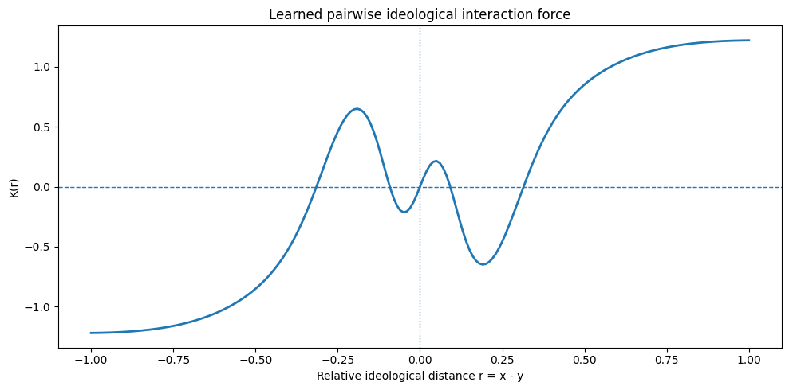
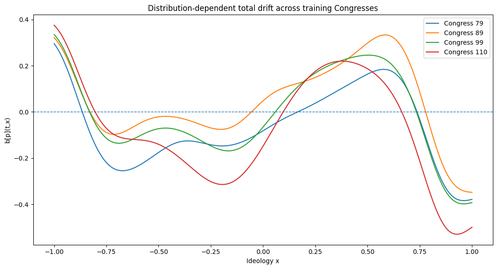
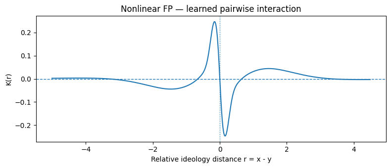
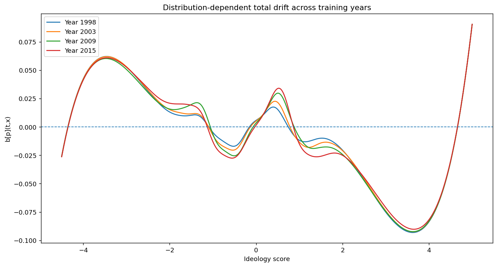

Physics-Informed Inference of Ideological Distribution Dynamics in U.S. Legislatures
Department of Mathematics and Statistics, Georgetown University
Abstract
Understanding the evolution of legislative polarization requires modeling not only individual ideological positions but also how the full distribution of those positions changes over time. We develop a physics-informed inverse framework for learning ideological distribution dynamics from roll-call-based ideal-point estimates. We represent the ideological distribution as a probability density governed by a nonlinear and nonlocal Fokker–Planck equation, in which the drift combines a position-dependent background component with a distribution-dependent interaction kernel. The latter captures effective attraction- and repulsion-like interactions as a function of ideological separation and allows the aggregate drift to change endogenously as the population redistributes. We infer the unknown dynamics from empirical density trajectories and evaluate the learned law through held-out forward evolution without updating the simulated state with subsequent observations. We apply the framework to DW-NOMINATE scores from Voteview and Shor–McCarty common-space scores for U.S. state legislators. Across both settings, the learned dynamics yield meaningful held-out reconstructions while revealing interaction structures that are not uniformly polarizing. Instead, attraction-like and repulsion-like effects coexist at different ideological distances, and the resulting drift contains both outward and inward transport across ideological space. These results suggest that legislative polarization can be modeled as a state- and distance-dependent redistribution process rather than as a uniform force toward ideological extremes.
Method
We estimate ideological probability densities from roll-call-based ideal-point scores using kernel density estimation. A nonlinear, nonlocal Fokker–Planck equation models their evolution. Its drift combines a position-dependent background term with an interaction kernel that depends on ideological separation and the current density.
We infer the background drift and interaction kernel by fitting observed density trajectories while enforcing the governing equation and boundary conditions. We then hold the learned law fixed and evaluate its forward predictions against later, held-out densities. The analysis uses Voteview DW-NOMINATE scores for the U.S. House and Shor–McCarty common-space scores for state legislators.
Inferred dynamics




Citation
Citation details forthcoming.
@misc{lee_ideological_dynamics,
title = {Physics-Informed Inference of Ideological Distribution Dynamics in U.S. Legislatures},
author = {Brian Lee and Francesco Caffrey and Nikki Raman and Xin Li},
note = {Publication details forthcoming}
}